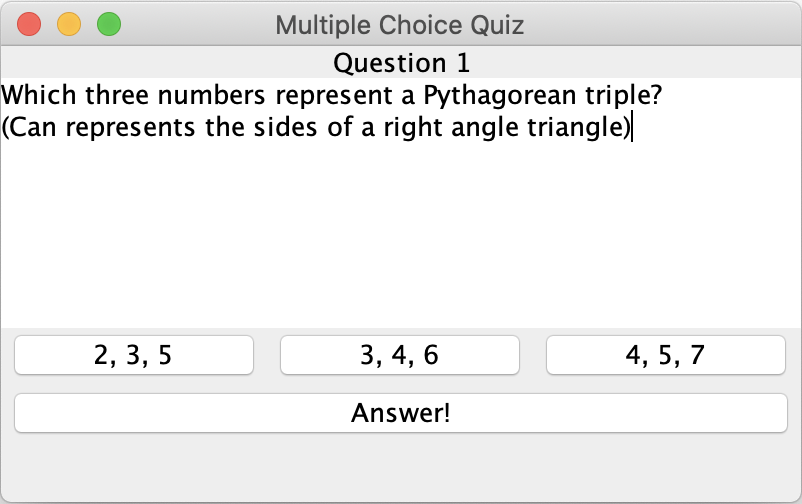
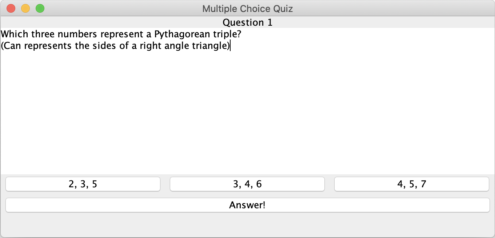

You need to create a GUI application for displaying a multiple choice question as shown in the images below:
 The difference in the images is in the application window size. Notice that by enlarging the application, only the part with the question text is enlarged, while other application components remain the same.
You need to complete the implementation of the class MultipleChoiceQuizFrame in the package hr.fer.oop.ljir.z4 and ensure that the application looks as shown in the images.
Note: The incomplete implementation of the class MultipleChoiceQuizFrame contains comment of the form // TODO ... in the places where you need to insert your code.
Additional class MultipleChoiceQuestion is used to store information about multiple choice questions. It has a constructor, getters for data about the question, getter and setter for getting and setting an answer to the question and method hasAnswer which return information whether an answer to the question has been set. Class MultipleChoiceQuestion MUST NOT be changed.
Application window consists of a separate panel for diplaying a question (inner static class MultipleChoiceQuestionPanel), grading button ("Answer") and a status bar displaying the grading results (empty at the start).
Inner static class MultipleChoiceQuestionPanel is used to display question data and shows queston title at the top (JLabel), questin text in the main part of the panel (JTextArea), and three buttons of type JToggleButton displaying possible answers. Question display panel takes a reference to a question that needs to be displayed in the constructor, setting all needed GUI components accordingly.
At the start none of the buttons is pressed. You need to ensure that only one answer can be chosen at one time (only one button can be pressed).
Pressing a grading button ("Answer"), a grading is performed for the question and appropriate message is shown in the status bar:
You are allowed add addition member variables and methods to classes MultipleChoiceQuizFrame as needed.